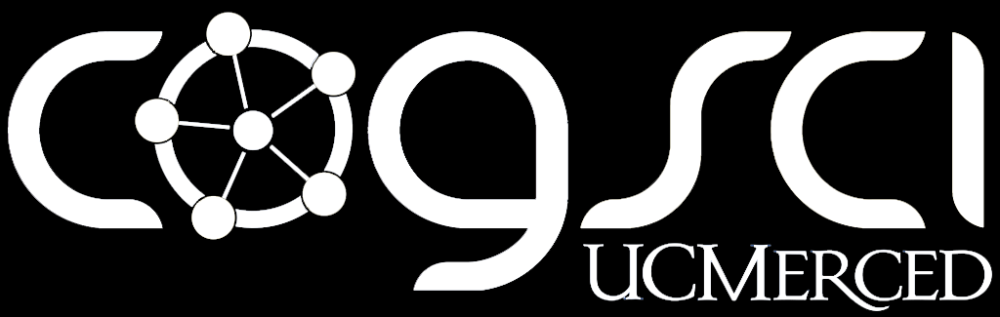

Computer Science and Engineering student at UC Merced
Software Engineer with a focus in Machine Learning and Computer Vision
Welcome! I'm Pranav, a third-year CSE student at the University of California, Merced. My expertise lies in AI and Computer Vision, and I have been focused on CV for vehicles and Autonomous Driving. I enjoy learning new aspects of my major, and I frequently explore fields that have CS applications, namely Cognitive Science.
recent projects
Independent research paper on a RAG framework that performs graph-traversal over hierarchical knowledge graphs to deliver structured context to LLMs. Tested with Ollama Mistral 7B.
AI-powered transit planning web app for UC Merced students using Google Gemini 2.5 Flash to process natural language queries and recommend CatTracks bus routes
skills
experience
Learning Computer Science and Engineering at UCM. Despite its solitude, the smaller campus allows me to foster relationships with peers and professors that I don’t believe I could make at many other universities.
- Dean’s Honor List every semester from 2023-2025
- Chancellor’s Honor List for 2024 and 2025
- Vice President and SIG AI Lead for the Association for Computing Machinery
Undergraduate Research Assistant at EvoLab, a cognitive science lab at UC Merced run by Dr. Colin Holbrook, focused on Human-Robot Interaction research.
- Implementing LLMs into robots to allow for open-ended natural language commands for control
- Handling of software for Engineered Art's Ameca Robot
- Experience with running participants and handling neuroimaging technology for experiments
